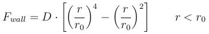

fix wall/region/sph command¶
Syntax¶
fix ID group-ID wall/region/sph region-ID r0 D
- ID, group-ID are documented in fix command
- wall/region/sph = style name of this fix command
- region-ID = region whose boundary will act as wall
- r0 = cutoff distance from wall at which wall-particle interaction due to repulsive force is cut off (distance units)
- D = prefactor for repulsive force
Examples¶
fix wall all wall/region/sph myWall 0.01 2.5
Description¶
Treat the surface of the geometric region defined by the region-ID as a wall which interacts with nearby particles. The distance between a particle and the surface is the distance to the nearest point on the surface and the force the wall exerts on the particle is along the direction between that point and the particle, which is the direction normal to the surface at that point.
Regions are defined using the region command. Note that the region volume can be interior or exterior to the bounding surface, which will determine in which direction the surface interacts with particles, i.e. the direction of the surface normal. Regions can either be primitive shapes (block, sphere, cylinder, etc) or combinations of primitive shapes specified via the union or intersect region styles. These latter styles can be used to construct particle containers with complex shapes. Regions can also change over time via keywords like linear, wiggle, and rotate, which when used with this fix, have the effect of moving the region surface in a prescribed manner.
Warning
As discussed on the region command doc page, regions in LIGGGHTS(R)-PUBLIC do not get wrapped across periodic boundaries. It is up to you to insure that periodic or non-periodic boundaries are specified appropriately via the boundary command when using a region as a wall that bounds particle motion.
Warning
For primitive regions with sharp corners and/or edges (e.g. a block or cylinder), wall/particle forces are computed accurately for both interior and exterior regions. For union and intersect regions, additional sharp corners and edges may be present due to the intersection of the surfaces of 2 or more primitive volumes. These corners and edges can be of two types: concave or convex. Concave points/edges are like the corners of a cube as seen by particles in the interior of a cube. Wall/particle forces around these features are computed correctly. Convex points/edges are like the corners of a cube as seen by particles exterior to the cube, i.e. the points jut into the volume where particles are present. LIGGGHTS(R)-PUBLIC does NOT compute the location of these convex points directly, and hence wall/particle forces in the cutoff volume around these points suffer from inaccuracies. The basic problem is that the outward normal of the surface is not continuous at these points. This can cause particles to feel no force (they don’t “see” the wall) when in one location, then move a distance epsilon, and suddenly feel a large force because they now “see” the wall. In the worst-case scenario, this can blow particles out of the simulation box. Thus, as a general rule you should not use the fix wall/region command with union or interesect regions that have convex points or edges.
The wall-particle interaction consists of two parts. The main one is a repulsive force which is calculated similar to the Lennard-Jones potential:
Warning
For all of the styles, you must insure that r is always > 0 for all particles in the group, or LIGGGHTS(R)-PUBLIC will generate an error. This means you cannot start your simulation with particles on the region surface (r = 0) or with particles on the wrong side of the region surface (r < 0). The force on the partice blows up as r -> 0. This means the initial particle distance from the region surface must be larger than r0.
An additional force is acting on particles within the cutoff distance of the interpolating kernel. They can “see” a clone of theirself at the wall. This leads to a small disturbance which prevents particle stacking.
Restart, fix_modify, output, run start/stop, minimize info¶
No information about this fix is written to binary restart files.
None of the fix_modify options are relevant to this fix.
No global scalar or vector or per_atom quantities are stored by this fix for access by various output commands.
No parameter of this fix can be used with the start/stop keywords of the run command.
This fix is not invoked during energy minimization.
Restrictions¶
none